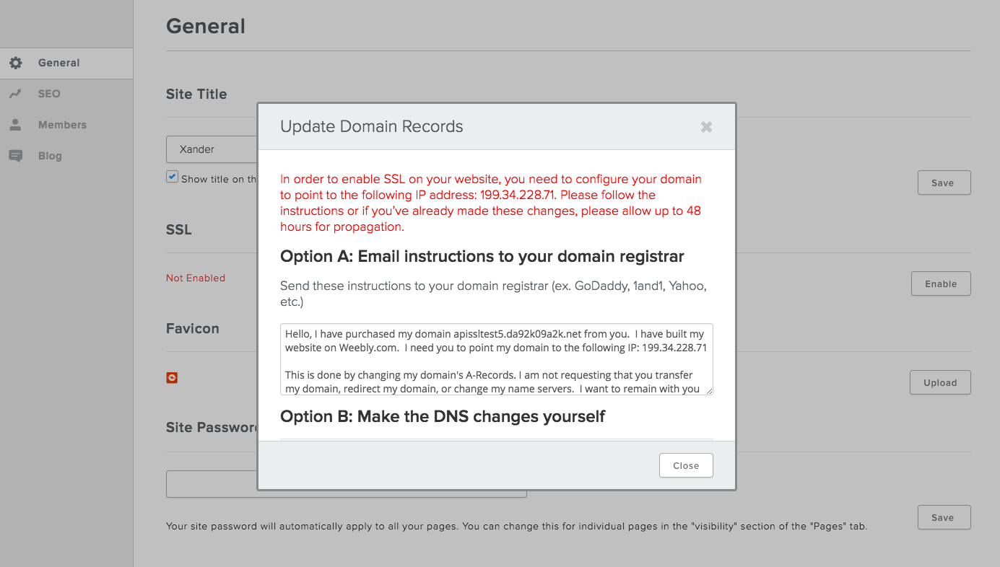

You have two options for hosting Weebly sites - you can either host them on your own infrastructure or they can be hosted at Weebly.
Self-Hosting
When you host your sites, all HTTP requests go through your server. And all static content (html, js, css, images, etc.) are also served from your server. Some dynamic content (eCommerce, membership, blogs, etc.) require a call to a Weebly endpoint that then returns the relevant content. Some dynamic pieces of content are cached on the hosted server to facilitate better performance.
On a more technical level…
When a user publishes a site, we FTP some static files (index.html), our proxy files (a few PHP files) and .htaccess to the location you’ve specified for that site. The php file is very small and acts as a proxy. The first request to the published site is responded to by the php file (via the 404 handler specified in .htaccess). The php file makes a call to Weebly for the contents of the page. The contents are then returned to the user’s browser. At the same time, the php file caches the content for each subsequent request to avoid future trips to Weebly for the contents. Upon next publish of the site the cache is cleared and the process starts again.
Requirements for self-hosting
LinuxServer
Apache (64 bit), with mod_rewrite and mod_authz_core modules activated/installed
PHP 5.3 or higher, with cURL and \ZipArchive activated/installed
Apache/httpd user needs permission to alter files in the publish directory
FTP Passive Mode enabled
Set Up
If using one of our plug-ins, visit the cPanel, WHMCS, or APS pages for additional set up information.
Weebly Hosting
When you choose to have Weebly host your customer sites, all files live on Weebly’s servers. There’s no limit to the amount of storage space your sites use when you choose Weebly hosting.
Note: When hosting at Weebly, you do not have FTP or SSH access to the Weebly infrastructure.
Reliability
Weebly operates geographically redundant data centers and are PCI Saq C compliant. Monthly, 3rd party security scans are performed against the entire network. Additionally, Weebly has near-real time replication of user data between our Primary and DR data centers. Weebly also has full control over the entire network, including Switching, Routing (AS27647), IP space, etc. Weebly has extensive in-house DDoS mitigation capabilities (as well as external mitigation options).
Requirements
The domain for all sites must be a fully qualified domain name, for example, www.mydomain.com. Sub domains are allowed, for example sub.domain.com.
Note: Domain names must be unique and must not contain weebly.
If providing an SSL certificate for a site, you must point the A record to the IP address shown in the dialog when enabling SSL.

SSL Modal in Weebly
Non-SSL sites may pick any IP between 199.34.228.55 and 199.34.228.59.
Set Up
As with self-hosted sites, if using one of our plug-ins, visit the cPanel, WHMCS, or APS pages for additional set up information.